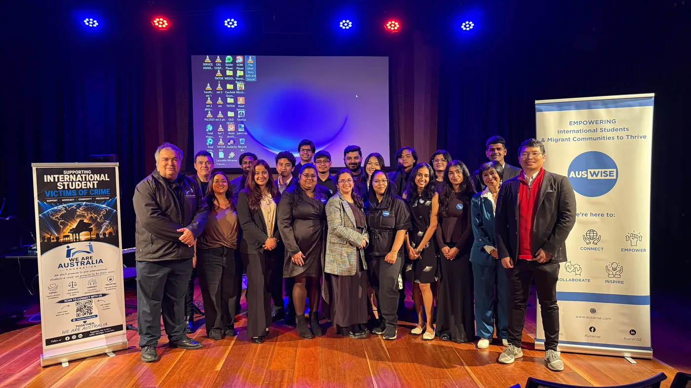
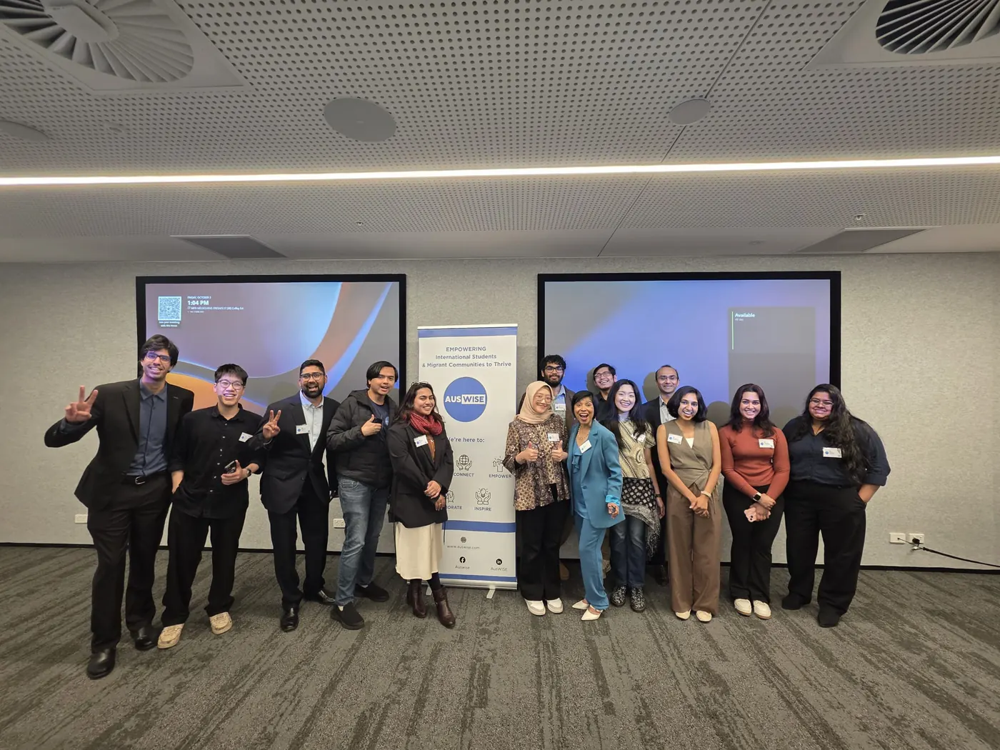
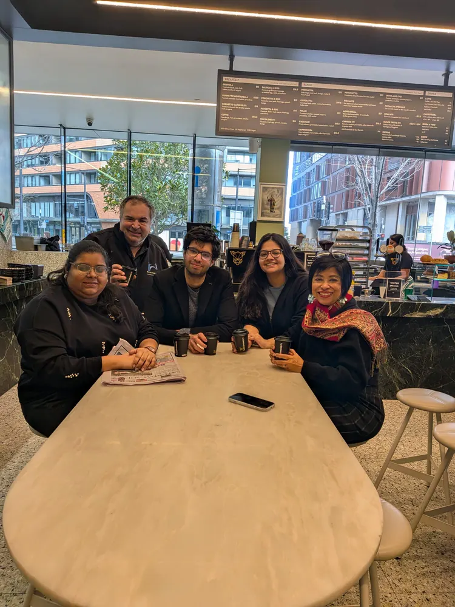

Experience
From internships in 2020 to shipping production AI in Melbourne. Every role is below; click a bar to jump to it. Degrees are on the Education page.
Bars run from start to end month; a dot on the end means the role is ongoing.
Leadership in action
Out with the AusWise community
Leading the data team and helping run events for international students and migrant communities.



NEXT · 2 / 7Education
→